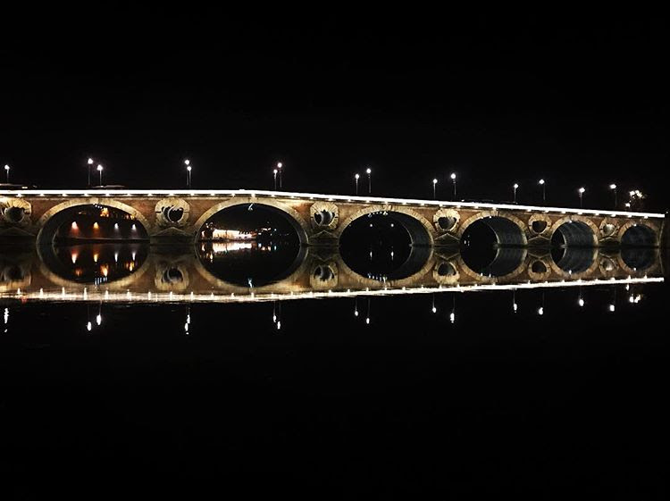
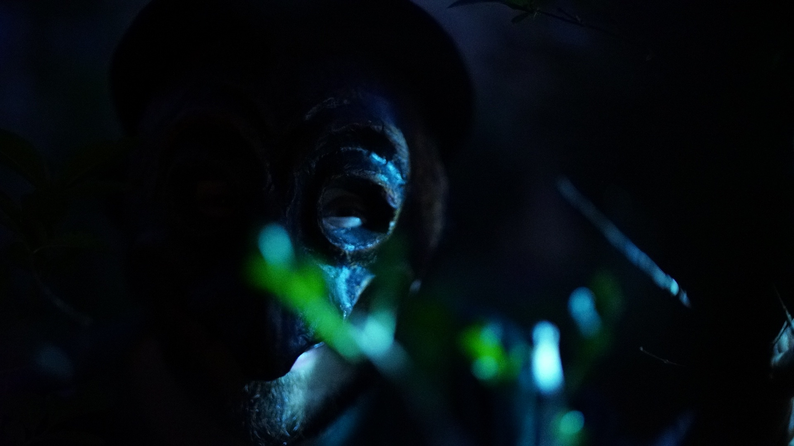
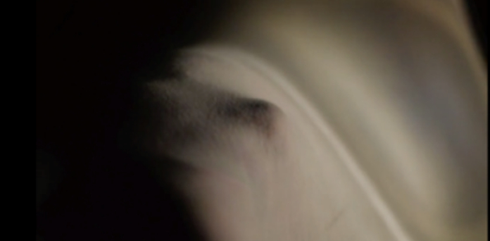
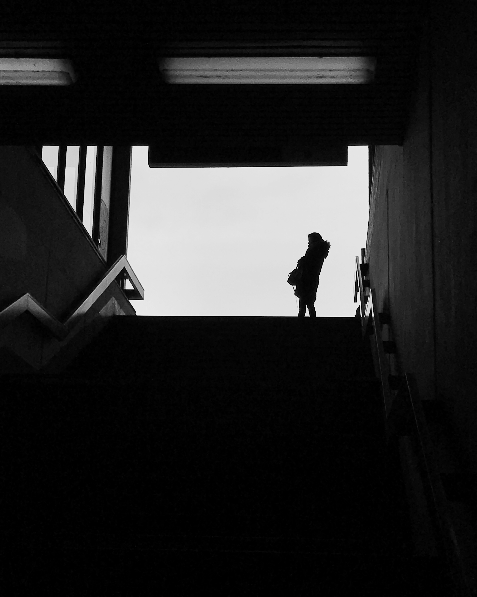

Horizonte, 2021
- style="color:white"> What could be the identity and purpose of a human-like body with a mask placed in an unknown landscape? Lauro Kräger, a human-like entity, does a ritual of uniting the visible and the invisible realms of the universe with two oil lamps, one from the East and the other one from the West. Lauro suddenly disappears behind a circular portal of fire leaving a living mask within human domains after revealing the existence of a whisper that animates the living.

- style="color:white"> What could be the identity and purpose of a human-like body with a mask placed in an unknown landscape? Lauro Kräger, a human-like entity, does a ritual of uniting the visible and the invisible realms of the universe with two oil lamps, one from the East and the other one from the West. Lauro suddenly disappears behind a circular portal of fire leaving a living mask within human domains after revealing the existence of a whisper that animates the living.
Die Metamorphosen, 2019 (In progress) 
In der Fremde, 2018
The interaction between two strangers is deceptively simple: a confrontation between an older man and a younger woman in one of Berlin’s haunted graffiti-covered architectural relics. The utterances exchanged are few, yet with those very words and stunning visuals the “para-realismo” vision of Mexican filmmaker Julio Alcántara achieves the seemingly impossible: a unified work of art demonstrating the quantum leap through geometrical structuring of space/time.

Xólotl, 2016 
Grenzen, 2015 
Ein Rätsel, 2014 